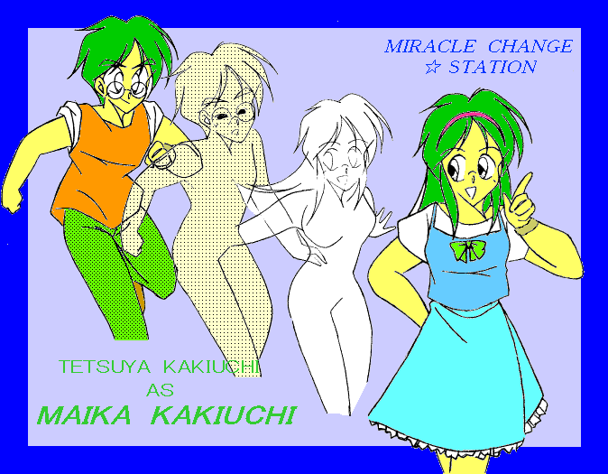
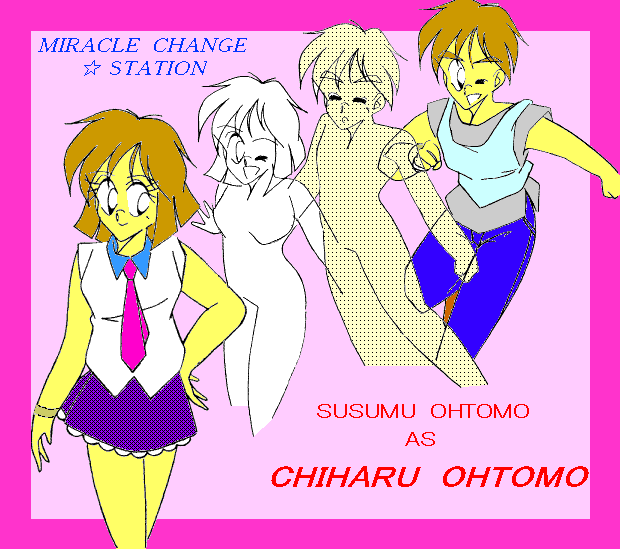

超人気アイドルデュオ『ライナ』。
上品なルックスと、それに似合わぬ元気いっぱいの振る舞いで
女子中高生の教祖的存在となった垣内舞香。
ボーイッシュな外見と、それに似合わぬおしとやかな言動で
男子中高生から熱烈な支持を集める大友千春。
彼女たちのトップスターへの旅路は、まだ始まったばかりである。

作：Ｋａｒｄｙ
第１話 「いきなり美少女アイドル！!」
「というわけで、今日のゲストは『ライナ』のお２人でした！
どうもありがとう！」
「「ありがとうございまぁす！」」
『はい、ＯＫでーす。』
「あ、お疲れ様でしたぁ。」
「おぅ、千春ちゃん。お疲れ！」
「明日もよろしくお願いしまぁす♪」
「お疲れ様、舞香ちゃん。明日もよろしく！」
通路を行くスタッフに一人一人挨拶して、大友千春と垣内舞香は楽屋になだれ込んだ。
「ほひぇー、疲れたぁ！」
「これがあと３日は続くのかぁ・・・」
などと２人がグチっているところへ、マネージャーの中嶋聡が入って来た。
「お疲れ様、お２人さん・・・って、舞香！
いつも言ってるだろ！誰が入るか分からないんだから、もうちょっと慎ましいカッコしてろって！」
「だぁってぇ！暑いしだるいし、もう背筋伸ばしてる気力ないよぉ・・・」
「まったく・・・舞香ももう少し千春を見習ってだな・・・」
「へぇ、それじゃ中嶋さん、あたしが千春みたいに、自分の事『ボク』なんて呼んでもいいんだぁ？」
「まぁ、その辺は千春ももう少し舞香を見習ってだな・・・」
そう言うと、それまで黙って荷物を詰めていた千春が抗議を始めた。
「じゃぁ中嶋さん、ボクが舞香ちゃんみたいにあられもないカッコで寝そべってていいんですか！？今さっきそれで舞香ちゃんに文句言ったばっかりなのに・・・」
「・・・ったく、お前らは２人して・・・
社長も何だって、こんな凸凹コンビを売り出す気になったんだか・・・」
「しかもそれが、今や事務所の景気を左右する超人気アイドルなんだから、中嶋さんとしては辛いところだよねぇ」舞香が茶々を入れる。
「お黙り。そうせざるを得なくなった、そもそもの原因はお前らだろうが！」
そう言われては、さすがの舞香も黙らざるを得なくなった。しかも、彼女たちの秘密を守るために、事務所は並みのアイドル以上に神経と労力を使っているのだ。
「さぁ、次は『ビー・ガイ』の取材だ。あの雑誌は男子中高生に人気があるから、それなりの対応で行くんだぞ。」
「「はぁーい♪」」
舞香と千春は、営業スマイルの練習を兼ねて、思いっきり「媚び声」で返事をした。
「国民的ベスト・シスター」にも選ばれた事のある「ライナ」だが、その秘密を知る者は、中嶋を始めとする事務所関係者、それから一部の友人しかいない。
実はこの２人、数ヶ月前まではごく普通の「男子高生」だったのだ。
そんな２人が、なぜアイドルとして活動する事になったのか？
話は、６ヶ月前にさかのぼる。
時は６月のある日、私立玲進学園高校は、梅雨の晴れ間を迎えていた。
教室を掃除中の大友進（おおとも・すすむ）に、早々と視聴覚室の掃除を済ませた垣内哲也（かきうち・てつや）が声をかけた。
「おい進、今度の日曜空けとけよ。」
「いいけど・・・映画でも行くの？だったら彼女でも誘ったほうが・・・」
「俺にそんな都合のいい女がいるわけないのは、お前だって知ってるだろうが。それに、お前じゃなきゃできない用事なんだよ。」
「僕と哲也じゃなきゃ出来ない用事・・・何それ？」
「まぁ、それは当日のお楽しみだな。」
哲也がこういう切り出し方をした場合、たいていろくな事にならないのは重々承知の上だった。それでも、進は何故か哲也の言う事には昔から逆らえない。
「うん・・・わかった。」
「あ、それと前日夜、俺んとこ集合な。」
「夜ぅ？それって、泊まれって事！？」
進の抗議などどこ吹く風、要件を伝えた哲也はもういなくなっていた。
で、当日朝。
寝ぼけまなこで自分の姿を見た進は、あまりの変貌ぶりに目を疑った。
まず、足。昨日までちょろちょろと生えていた毛が、一本残らず剃り落とされている。
顔。整えられた眉毛は、まるで女の子のよう。
爪にはマニキュアが塗られ、頭にはウィッグがかぶせてあった。
哲也のしわざに違いない。むかしから、こうやって進をおもちゃにして遊ぶのが、ある意味哲也の日課だったようなものだ。
今日こそは文句を言ってやろうと、通算で１５回目ぐらいになる決意を固めた進の前に、ショートカットの女の子が座っていた。
「あ・・・あれ？・・・君、誰？」
訳も分からず問い掛ける進。しかし、答える少女の声は、進の度肝を抜くには十分だった。
「見て・・・わかんないか。俺だよ。哲也。」
「哲也？哲也なの！？」
「・・・で？ボクは何でこんなカッコなの？」
「それはな・・・こういう事なんだよ。」そう言って、哲也が取り出した一枚のハガキ。
そこには「『レオの妹を探せ』コンテスト・第２次選考のお知らせ」と書かれていた。
しかし、それが自分と何の関係があるのだろう？進には話が見えていなかった。
「理由になってないよ。そのコンテストと僕が女装する事と、どんな関係があるの？」
「だからぁ、俺たちがそのコンテストに出るんだってばよ。」
一瞬の後、進の顔から血の気がナイアガラの滝のように引いて行った。
今にも泣き出さんばかりの進に問い詰められ、哲也はついに今回の策謀の全貌を白状した。
最近売り出し中の男子３人組ユニット「レオ」の路線を引き継ぎ、アイドルとして売り出すための女子高生発掘プロジェクトが始まった。それに、哲也が冗談半分に応募してしまったのだ。勿論、進も込みで。（２人一組が応募の条件だったからだ。）
ところが、２人とも顔立ちが整っており、年齢の割に幼く見えるところがある。ユニセックスなファッションで決めたら、それこそ男か女かわからなくなるような存在だったのだ。選考委員の目をくらますには、写真一枚とパソコン一台あれば十分だった。
だが、このまさかの書類選考突破が、哲也に悪魔的なアイデアを与えた。
かわいそうなのは進である。もともと「女男」とか呼ばれ、幼稚園の頃から馬鹿にされてきたのを救っていたのは、同じ悩みを持っていたはずの哲也なのだ。しかし、その哲也本人が、自分のコンプレックスを最悪の形で突く事をしようとしている。
しかも、聞けばそのコンテスト、水着審査まであるらしい。
「絶対嫌だよ！！」と進が一点張りで決めるのも、無理からぬ所か。
その日の正午。
「うぅっ・・・僕って弱い人間だ。」
コンテスト会場となる渋谷ルックアウトの前で、進はワンピースを着たまま「るるる〜」状態でたたずんでいた。
「大丈夫だって。最終審査にさえ残ればいいんだ。それだけで、賞金の３０万円は俺たちのもの。ちゃんと山分け・・・いや、進が７割でもいいぜ。」横から、こちらもミニスカートで決めた哲也が気楽に慰めた。
「自分専用のパソコンがほしい、なんて哲也にバラしたのが間違いだったんだ・・・」
「あぁもぉ、イラつくんだよっ！！ここまできたら覚悟決めろ！！」
「でも、まかり間違って最終審査で通っちゃったりしたら・・・」
「最悪、学校から脅された事にでもして、辞退しちまえば済むさ。そんな事より、目の前の水着審査と歌唱力審査を突破する事を考えろ。
いいか、極端なハスキーボイスは絶対駄目だ。男と女ってのは、キーの違いじゃない。要は声を出す場所が・・・」
出場者控え室に向かう道すがら、哲也の即席ギャル化指南が続く。
いよいよ、プログラムは問題の水着審査まで来た。
渡された水着を持って、進は更衣室で固まっていた。もともと声のキーが高い事もあって、ここまでは哲也共々なんとかごまかしてきた。しかし、ここまでだろう。いくらなんでも、水着は身体のラインが出てしまう。しかも、進とて精神健全な１５歳の男子である。同年代の裸同然の女の子たちに囲まれれば、「自己主張」を始めてしまわないとも限らない。そうなった時の恥ずかしさは、到底想像しうるものではないだろう。
なす術なくオロオロしている進の更衣室に、突然哲也が押し入ってきた。
「・・・ったく、こんなこったろうと思ったぜ。ほれ、まずは服脱ぎな。」
もう覚悟を決めるしかない。進は目を閉じて、哲也のなすがままに任せた。
目の前に、オレンジの水着をつけた美少女が立っていた。
いや、正確には「美少女にしか見えない男の子」だ。
それが自分である事に気づき、進は思わず我が目を疑った。
「おわ、こりゃ予想以上だな。これなら絶対バレねぇぜ。」
確かに、自分でも分からなかったくらいだ。
身体全体は、進が思っていたほど「野郎ライン」ではなかった。
顔を上げれば、哲也がメイクを直した事もあって、さっきまでよりもあでやかになっていた。
そして、一番重要な下半身には、どこからか手に入れたパットが入っている。これなら、息子が「自己主張」を始めても、なんとかごまかしが効くだろう。
「それとな、出かける前に飲んだあのカプセル。一定量の女性ホルモンが入ってて、性欲の増進を押さえる働きがあるんだよ。これで安心だろ？」
その時、係員が声をかけてきた。
「１２番の垣内舞香さん、大友千春さん、もうすぐ時間ですからね。」
その声に元気よく挨拶を返したのは、意外にも進であった。
「おやぁ、なんかえらくハイテンションだな、進。」
「だめだよ、男の名前で呼んじゃ。今はまだいいけど、ここを一歩でたら、僕たちは千春と舞香だからね。」
さっきまでの半ベソ状態からは想像も出来ない気迫に、今度は哲也が押される。しかし、すぐに気を取り直した。
「わ・・・わかったわ。それじゃその意気、審査員に見せ付けてやりましょう！」
「なんだか自信が湧いてきたの。ここまで来たら、絶対勝とうね！」
そう言いながら、２人は意気揚々と歩いて行った。
それから２ヶ月後。
一通の封書を前に、哲也は頭を抱えていた。
拝啓 垣内舞香様予想外の事態だった。
この度は、当社が主催いたしました『レオの妹を探せ！女子高生発掘コンテスト』にご応募頂きまして、誠にありがとうございました。
さて、今回のコンテストには、北は北海道から南は九州沖縄、さらにアジア各国も含め、実に３４７９組のご応募を頂きました。ご応募頂いた方、みなさま魅力的な女性ばかりだったのですが、今回その中からグランプリとして、垣内舞香様と大友千春様を推挙させていただく事になりました。
今回グランプリを獲得されました御両名には、賞金１００万円を進呈させて頂くとともに、今回のコンテストの提携先である『トランス・プロダクション』よりデビューのチャンスが与えられます。
つきましては、来る８月１９日に授賞式を執り行いますので、万障お繰り合わせのうえ、必ずご出席くださいますようお願い申し上げます。なお、詳細につきましては垣内様の御自宅へ、後ほど今後の予定ともども説明にお伺いいたします。
取り急ぎご連絡まで。
なお、この手紙は、同一の内容で大友様にもお送りしております。敬具
株式会社 ＮＤＣレコード
株式会社 夢文庫書店
翌日、２人は「トランス・プロ」のオフィスを訪ねた。
出迎えたのは、このプロジェクトの推進担当である中嶋氏。デビューの暁には、そのままマネージャーの座に収まる事が決定しているらしい。そういえば、コンテストの時に何度となく見掛けた顔だ。その中嶋が、今は顔面全体を引きつらせている。当たり前と言えば当たり前なのだが、その重苦しい雰囲気に、今にも飲まれそうな哲也。まして進は、もう涙をボロボロこぼしている。
これからどうなるのだろう。自分たちは大切なオーディションをぶち壊しにしてしまった。のみならず、近々動くはずだったプロジェクトまで台無しにしてしまったのだ。怖いお兄さんに囲まれて、骨の髄までボコボコにされるのだろうか？それとも、ン千万単位の借金を背負わされ、生涯をその返済で終える事に！？まさか男を風俗に売ったりはしないだろうが、進の場合は妹というリスクがある。進ほど表には出ていないが、哲也とて心中穏やかではなかった。
「・・・とにかく、ここまで騒ぎが大きくなってしまった以上、俺一人でどうこうと言うわけには行かん。今社長を呼んでくるけど、相当面倒な事になる。それだけは覚悟しておいてくれよ。・・・もっとも、自業自得だけどな。」
それだけ言って、中嶋が席を立った。
芸能界という所は、その表の華やかさが幻に見えるほど、裏で金と権謀が妖しくうごめく世界だ。おそらく「社長」というのも、どこかで「その筋」と繋がっているに違いない。逃げられるものなら、目の前の窓からでも逃げ出したかった。
だが、無情にもドアは開いてしまった。
「まったく、すごい事しでかしてくれたものね。」
そう言って目の前のソファに座ったのは、年の頃なら３０代前半を思わせるキャリアウーマンだった。
「直接お会いするのは初めてだったわね。
トランスプロダクション、代表取締役社長の松井久美です。」そう言って、２人に名刺を渡す松井。その顔を遠ざけようともせず、松井は進と哲也の顔を交互に覗き込んだ。
「・・・」そのまま、ソファの上で松井が何かを考え込む。
「・・・どうしました、社長？」不審に思った中嶋を遮って、松井が口を開いた。
「ねぇ・・・千春ちゃんはどっちだっけ？」
「あ、はい。僕です。・・・いえ、あたしです。」進が答える。
「てことは、こっちの子は舞香ちゃんね。」
「はい。」
「２人とも、最終審査の課題、覚えてる？」
「あ、はい。確かシナリオを渡されて、２人で演技しろって・・・」
「これから、別のシナリオで２人にそれをやってもらう。その結果如何で、あなたたちにどういう処断を下すか決めるわ。」
「社長・・・それって、まさかこの２人を・・・！？」
「いいからあたしに任せて。それより中嶋、ゆのんが出てるドラマ・・・あれ？」
「西口ゆのんですね？現在は『ラストチャンス』に出演中です。」
「それ、そのシナリオ。たしか予備があったはずだから、持ってきてくれる？」
一通りの読み合わせを終えて、松井の第一声はこうだった。
「中嶋ぁ・・・この２人、意外と行けるかもね。」
「そうかもしれませんが・・・しかし、『美少年』で売り出すのは困難です。少年アイドル市場にはすでに『レオ』がいますし、メディア各社も今回はその『妹』ってことでプランを立ててますから・・・」
「・・・その通りよ。だから行けるんじゃないの。」
「まさか、この２人に女装させて・・・それこそ無茶です！」
「いいから！あたしに任せろって言ったでしょ！？
伊東く〜ん。ちょっと車回してくれる？」壁の向こうから返事が聞こえた。
「社長！！」なおも食い下がる中嶋に、松井は冷たい視線を投げかけた。その冷酷なまなざしは、端で見る者以上の効果を与えたらしい。中嶋も引き下がってしまった。
「・・・あたしにも、いろいろ考えがあっての事なの。これ以上の口答えは、さすがに穏便には済ませられないわよ。
とにかく、あんたは黙ってついて来ればいいの。あ、そこの２人もね。」
すっかり蚊帳の外に置いてけぼりの２人。だが、ここで呼ばれた事で、ともかく自分の成すべき事はみつかった。
松井の運転する車で連れて行かれたのは、郊外の大学らしき建物。真っ白な外壁は、最先端科学のるつぼを思わせる。
「あの・・・こんな所で何しようと・・・」恐る恐るたずねる哲也。
「大丈夫よ。何も解剖しようとかじゃないから。命と健康は保障するわ。
ただ、何もしないで済むとは思わないでね。」
その言葉に、進は脅えきった表情で、哲也の陰に隠れる。
エレベーターで６階に上がり、突き進んだ先には「友利バイオ工学研究室（主幹：友利教授）」と書いてあった。
「松井ですぅ。さっきお電話さしあげたんだけど、教授いらっしゃるかしら？」
きっかり１分。ドアを開けて出迎えたのは、長髪白衣の「いかにも」な科学者だった。
「友利君、この子たちがさっきお話しした、アイドル志望の男の子。」
「あぁ、これなら十分だよ。松井さん、どこでこんな逸材拾ってきたの？」
「いろいろあってね。ちょっとシャレにならない事になりそうなんで、友利君の力を借りたいのよ。」
「わかってる。まぁ立ち話もなんだから、全員お入りよ。いつまでもこんな所にいたら、風邪引いちまうからさ。」
「中嶋は以前にも紹介してると思うけど・・・２人は知らないわよね？」
揃って首を振る哲也と進。
「こちら、この大学の教授、デニー・友利博士よ。
バイオ工学ではそれなりに名を上げてるんだけど・・・」
「まだまだ、この子たちくらいの年代じゃ知らないさ。同業者向けのマニアックな論文が多いからね。
友利です。松井さんとは高校時代からの付き合いでね。お互いヤクザな稼業同士、、何かと助け合ってるって事さ。
ところで君たち、女装してアイドルになるんだって？」
デニーが冗談交じりに言うと、２人は『ぎくっ』と身体を震わせた。
すっかり焦燥しきった哲也たちに代わって、松井が今回の来訪の真意を告げた。
「・・・ってなわけで、この２人がコンテストで優勝しちゃったのよ。本物の女の子たちを差し置いてね。でも、さすがにこの子たちをそのまま『美少女』としてデビューさせるわけに行かない。かと言って、このまま２人を家に返して、今回のプロジェクトをふいにさせる事も出来ないのよ。すでに億単位の資金が動きはじめてるんですもの。
それで、友利君の力を借りたい、ってわけ。」
「力を貸すのはいいけど、具体的に僕にどうしろと？」
いかにも真意が読めていそうな顔で、デニーがとぼけてみせる。
「今回はマジなのよ。下手したら、あたしまで首吊る事になりかねないわ。」
「わかったわかった。でもまだ最終的な確約は出来ないが、いいかね。
それじゃお二人さん、こっちで血液採取するから、おいで。」
それから２時間。５０ｃｃの血液に始まり、唾液、涙、尿、皮膚組織の一部・・・ありとあらゆる物が採取され、身体の隅々までデータを取られた。
緊張と恐怖でなすがままの進を横目で見ながら、哲也は疑問を持ちはじめていた。
あの時社長は、「命と健康は保障する」と言った。だが、自分たちの自由まで保障するとは言っていない。もしかすると、自分たちはここで永遠に実験材料として、デニーのおもちゃにされるのではないだろうか？そんな不安が頭をよぎった。
哲也は、自分のうかつさを激しく後悔していた。
あの時、賞金に目が眩んで余計なアイデアを思い付いたばかりに、それを実行してしまったばかりに、進にまで取り返しのつかない迷惑をかけてしまった。
家族は心配するだろう。こんな所で実験台になってるなんて、絶対話せない。
哲也の目から、大粒の涙が零れ落ちた。
その時、目の前にデニーの顔が寄ってきた。
「はい、お疲れさん。今日はこれで終わりだから、帰っていいよ。
１ヶ月ぐらいで準備が整うと思うから、その時は松井さんを通じて連絡するよ。」
その言葉を最後に、哲也と進は松井の車で、自宅に送り届けられた。
「それじゃ、友利君から連絡が入り次第、迎えに来るから。
逃げる、ってのは考えないほうがいいわよ。むしろ悪いようにはしないから。」
投げキッスとともに去って行く松井。
哲也を睨み付けながら、助手席でむっつり座っている中嶋。
いまだ不安のぬぐいきれない哲也。
「僕たち、これからどうなっちゃうんだろう・・・」
進の悲しげな一言が、哲也にさらなる不安を植え付けた。
「トランスプロの上田」と名乗る人物から、垣内家に連絡が入ったのは、それからきっかり３０日後の事だった。
いわく「次の日曜日に当社の松井が迎えに行くので、当日のスケジュールを空けておく事」。不審に思った母親が問い詰めても、上田と名乗った男は「これだけ伝えるように指示されている。それ以上の事は知らない。」の一点張りだったという。
そして、日曜日。哲也は予想外の展開に驚愕していた。
電話の主に不信感を抱いた母・裕子が、保護者として同席を要求してきたのである。裕子は哲也の芸能界入りには反対していなかったが、今回のコンテストに関しては一切話していない。もし生涯かけて実験台、なんて事にでもなったりしたら、話がややこしくなるのは目に見えていた。
だが、松井は意外な反応を見せた。
「もちろん、同席してもらうに越した事はないわ。哲也君たちが未成年である以上、どこかで親御さんの承諾を得ない事には始まらないもの。それなら、今日の段階が一番いいと思うの。」
となると、何か大きな計画が待っている事には違いない。
こうして、哲也、進、裕子、松井、中嶋、さらに上田と名乗った青年の６名が、再びあの象牙の塔へ出向く事になった。
６階の研究室では、デニーたちが準備を整えていた。
裕子は、何故自分がこんな所に連れてこられるのか分からず、あたりを見回している。それを見た中嶋が落ち着かせようとしていたが、やはり何処か落ち着かない様子。
哲也と進には、先月ここを訪れた時の情景がフラッシュバックしていた。
やがて、デニーが２人を呼んだ。
「ついでだから、こいつに着替えて頂戴。」そう言って渡したのは、水色のスウェットスーツ。下着も全部取るように指示された。
やはり何かの実験台にされるのだろうか？
不安を感じながら次の指示を待っていると、渡されたのは手首がすっぽり入るくらいのブレスレット。それぞれ違う物が手渡されたのは、縦に入ったストライプでわかった。
「え〜と、それじゃぁね。今から最終装着実験を開始します。
なんか、２人で覚えやすそうなキーワードを決めて頂戴。」
「装着実験？このブレスレットが何かするんですか？」
「まぁ、それは実際なってみてのお楽しみだな。」
いきなりキーワードと言われても・・・哲也は首をひねるばかり。その時、進がふとつぶやいた。
「...Boot strap」
「なんだって？」聞き慣れない言葉をぼそぼそと喋られては、長い付き合いの哲也でもさすがに聞き取りづらい。思わず聞き返したのだが、その声がよほど大きかったらしく、進もムキになって返した。
「ブート・ストラップ！！
・・・コンピュータ用語でね。電源を入れた時に、一番最初にシステムを起動させる事をそう言うの。」
「へぇ、君コンピュータやってるんだ？
まぁ正しくは『システムを起動させるために、最初に読み込むＲＯＭ』の事らしいがね。確かに起動という意味ではぴったりだな。」
「頭にふっと浮かんだだけなんですけど・・・なんだか、これを選ぶのが一番いいような気がするんです。」
「え〜と、そっちの・・・哲也君だったね。君はそれでいいかい？」
「なんだか覚えにくい言葉だけど・・・いいですよ。合ってそうなら。
それに、進が自分から何か決めたいって言い出したの、これが始めてなんすよ。」
そう言いながら、哲也はこれから起こる事が、なにか自分たちにとって運命的な転換になるような予感がしていた。
傍らで、何やら端末に入力を済ませたデニーがやおら振り返る。
「それでは、実験開始だ。
２人のブレスレットを組み合わせて、キーワードを叫ぶんだ。」
その言葉のまま、哲也は左手の、進は右手のブレスレットを、お互いのそれにくっつける。そして、大きく息を吸い込み、顔を見合わせて、同時に叫んだ。
「「ブート・ストラップ！！」」
その瞬間、２人の視界が歪んだ。
「松井さん、松井さん！！
すぐ来てくれ！実験は大成功だ！！」
デニーの堂間声で我に返った哲也は、何が起きたのか確かめようと、あたりをキョロキョロと見回した。
デニーの声に弾かれるように入って来た松井・中嶋、上田。もともとこの部屋にいたデニー、助手数名。それから・・・ショートボブの女の子が床でのびている。
・・・あれ？進はどこだ！？それに、この女の子はいつここに入って来たんだ？
哲也の思考は、そこで中断した。
「なかなかいい感じに仕上がったじゃない！これなら充分使えるわ！」松井が自分を見て叫んでいる。その横では、中嶋が信じられないといった表情でこちらを見ていた。
いったい自分に何が起きたのか？デニーは自分に何をしようとしたのか？それを確かめようと、哲也はやおら起き上がった。
「・・・あれ？なんだか・・・俺の髪、ずいぶん長くなってない？」
「気がついたのかい？とりあえず、自分の姿を鏡で見てごらん。」
デニーに言われるがまま、姿見の方へ歩く哲也。

鏡に映っているのは、どこからどう見てもロングヘアの女の子。
顔はちょっとだけ哲也自身に似ているが、こっちの方が断然かわいい。
胸は・・・よく知らないけど、Ｃカップぐらいか。
引き締まったウエストは、緩めのスウェットの上からでも、それが良く分かった。
すらっと伸びた足はすべすべで、思わずほお擦りしたくる。
全体に華奢なラインは、世の男だったら絶対放っておかないだろう。
「ふぅん・・・俺ってこんなにかわいいんだぁ・・・
ちょっと待て！！」
数分後、哲也と同じように目を覚ました進は、Ｄカップの美少女になってしまった自分を見て、パニックのあまり泣き出してしまった。
ものすごい剣幕でデニーに詰め寄る２人に、松井が今回の顛末をすべて白状した。

松井とて、コンテストをぶち壊した２人に対してただならぬ憤りを感じてはいた。
しかし、ここで２人の親から金を絞り取ったり、別方面で回収した所で収まる話ではない。何社ものスポンサーがつき、今後のデビュー計画も殆ど固まっていた所へドタキャンという事になれば、事務所にとっては致命的な信用失墜だ。なんとしても、当初の予定のまま２人をアイドルに仕立て上げなければならなかったのである。
そこで松井が思い当たったのが、バイオ工学の権威であるデニーだった。デニーの技術力をもってすれば、２人を「とりあえず」女の子に見えるように整形できるかも知れない。そう考えた松井は、さっそくデニーに話を持ち掛ける。だが、話は松井の予想を越えたレベルへ進んで行った。デニー自身が、一時的な性転換も可能だと言い出したのである。
デニーの提唱する方法とは、２人のＤＮＡから、男子特有の部分である「Ｙ染色体」を凍結し、残った「Ｘ染色体」を倍加するものであった。そして、書き換えられたＤＮＡを元に、肉体を再構成する。Ｙ染色体はサンプルだけ残しておいて、元に戻る時に使用するのである。こうすれば、いくら調べても医学的には女性の兆候しか出てこない。
進と哲也の身体にはナノマシンが埋め込まれ、ブレスレットから特定周波数の電磁波が照射される事で、ナノマシンがＤＮＡを書き換えて行く。この時、２人の声紋が作動キーとして必要だったのである。
変身する所を見られるリスクを除けば、芸能レポーターをまくのにこれほどのチャンスはなかった。
「そういうわけで、今後２人にはこの姿で芸能活動に励んでもらいます。
２人とも、いいわね。」
そう言われては、さすがに了承するしかなかった。
「それにしても・・・オーディションの時もかわいかったけど、こうして本物の女になってみると、数段魅力アップよね。」
「しかし、まだ信じられませんよ。ホントにあの２人なんですか？みんなして、俺をからかってるんじゃないでしょうね？」中嶋が不審げに聞き返す。
「そういうなら、中嶋自身で試してみる？」松井の目の無気味な輝きを前にして、中嶋もさすがに恐怖を感じたらしい。
「い、いえ。遠慮しときます。」
「そうそう！せっかくの晴れ姿、お母様にも見ていただきましょうね♪」
そう言って、いきなり松井は裕子を呼び寄せた。慌てて哲也が止めようとするが、もう遅い。
「ホントに・・・このキュートな女の子が、うちの哲也なんですか・・・！？」
口をあんぐりと開けたまま絶句する裕子。
哲也は激しい絶望感を感じていた。我が母は、こう見えて結構厳格だ。やむを得ぬ事情とは言え、自分の息子がこんな格好でアイドルなんて事になった日には、卒倒するに違いない。あぁ親子の楽しい日々よさようなら・・・
「かっわいぃ〜っ！！！」
哲也の「るるる〜」な妄想は、素っ頓狂な叫び声とともに抱き着いてきた裕子によって破られた。
「ホントに・・・ホントに哲也なのね・・・」
見ると、裕子は涙を流していた。どう考えても、悲しがってるようには見えない。
「お母さんね・・・本当は、女の子が欲しかったの。
小さい頃は哲也を見るたびに、これで女の子ならもっと良かったのに・・・なんて思ったりして・・・
だから、今のあなたを見たら、それが哲也だって知ったら、もう嬉しくて・・・あ、ごめんなさい。みっともない姿見せちゃって・・・」
「いえ、お気持ちは充分お察ししますわ。
それではお母様、よろしいですわね？」
「ええ、それはもちろん。
ふつつかではありますけど、うちの『娘』をよろしくお願いいたします。」
「息子だってば・・・」もはや声にならない声で、哲也が抗議する。だが、そんなものが聞こえていようはずはなかった。
「垣内家への説得は、もはや必要なさそうですね。問題は大友家ですが、この場にいない以上、説明が難しいと思われます。いきなり女になってアイドルと言っても、精神科を紹介されるのがオチかと・・・」
心配そうに松井に問い掛ける中嶋に、裕子は一遍の不安もなく答えた。
「それでしたら心配いりませんよ。
恵理さん・・・進ちゃんのお母さんなら、あたしとは大の仲良しですから。あたしから説明すれば、彼女も納得してくれると思います。
いざとなったら、うちにでも泊まってる事にすればいいわ。」
「ではお手数ですが、その方向でお願いします。」深々と頭を下げる松井。
「でも哲也、あんたそういう願望があったんなら、最初にお母さんに言えばよかったじゃない。事務所のみなさんに迷惑かける事もなかったのに。」
「だぁかぁらぁ！俺は単に賞金目当てだっつーの！！別にＳＭ○Ｐみたいになりたいわけじゃなかっ・・・」
早口でまくし立てる哲也に、裕子がストップをかけた。
「せっかくの美少女が『俺』なんて言っちゃダメでしょ♪
・・・そうねぇ、考えてみれば名前も変よねぇ。」
「それでしたら心配要りませんわ、お母様。」やにわに目の色を変えた松井。
「この２人がオーディションの際に使っていた名前があります。
『大友千春』と『垣内舞香』。かわいらしい名前でしょう？」
問いかける松井に、裕子は絶句したまま答えない。
「お母様・・・？どうされました？」
「ホントに・・・ホントにその名前なんですか？」
その質問に答えたのは、哲也だった。
「そうだよ。母さん、前に言ってたじゃないか。
男が産まれたら哲也、女だったら舞香にする予定だった、って。」
「そうだったわね。それでびっくりしちゃって・・・
いいわ。これから女の子の時は、あんたを『舞香』って呼ぶからね。」
「・・・ちょっと待ってくれよ母さん！もしかして、状況楽しんでないか！？」
ようやくその事実に気づいた哲也・・・訂正、舞香が叫ぶ。
「言ったでしょ？お母さん、女の子が欲しかったって。
これからは、お洋服とかい〜っぱい、買ってあげるからね。」
「ご理解のあるお母様で良かったわね、舞香ちゃん♪」
松井までが、一緒になって遊び始めた。
顔に縦線バシバシ入れながら、消え入りそうな声でつぶやく舞香。
「・・・実験台の方が、まだマシだったかも知れない・・・」
同時刻、すっかり打ち解けていた一同を凝視しながら、進・・・訂正、千春が床にへたり込んだまま、「るるる〜」状態でつぶやいていた。
「ねぇ、みんな・・・
もしかして、僕の事忘れてない？」
中嶋の運転するワゴンは、鶴ヶ島インターから大東京環状に入り、亀山台ニュータウンに到着した。
「それじゃ明日から２日間オフに入るけど、あまり女の子モードで出歩いたりするなよ。特に舞香、お母さんにもよく言っておけ。」
「「はぁーい。」」返事はいいのだが、この指示を守ったためしがない事は、中嶋自身がよぉく知っていた。
「ねぇ千春、着いたら家に寄ってかない？」
「いいけど・・・どうして？」
「この間あんたに『ガツプロ』で負けたでしょ？あたし、あれからいろいろ調べて、裏技とか研究しまくったの。ざっつ・リベンジよ。」
先月のオフの日、徹夜で「ガッツで行こうぜ！プロ野球」をプレイしていた時の事を、舞香はまだ根に持っていたようだ。
「でもこんな遅い時間じゃ、舞香ちゃんはともかく裕子おばさんに迷惑・・・」
「いいのよ。どうせ今夜は泊まっていってもらうつもりだったし。
お母さんがね、今月臨時ボーナスが出たから、あたしと千春をバーゲンに連れてってくれるんだって。ん〜、今から楽しみだわぁ♪」
「ホント！？嬉しいな♪
ボクのママ、そういうの全然興味なさそうだから。」
「こらこら！今俺が言った事、もう忘れたか！？」
中嶋が慌ててツッコミを入れたが、すでに舞香も千春も聞いちゃいない。
「でも、それならなおさら今日は早く寝ておいたほうがよくない？睡眠不足が続くと、お肌荒れちゃうよ。」
「・・・ちょっとだけよ、ちょっとだけ。
溜まってたゲームが山のようにあるんだもの。今のうちにやっとかないと、そのうち部屋がディスクで溢れかえっちゃうわ。
大丈夫よ、１２イニングで解放してあげるから。」
「・・・ボクと舞香ちゃんがやると、いつも乱打戦になるんだもん・・・」
「２人とも、欲しいものがあったらどんどん奪い取りなさい。
遠慮してたら、それこそオケラで終わっちゃうわよ。」
その言葉に我を忘れた２人、メインとなるワゴンの前に突進していった。
「あ！これも〜らい！！」
「じゃぁ、ボクはこれ！！」
「あ、千春ずるい！それあたしも目つけてたのに！！」
「『どんどん奪い取れ』って、裕子おばさんも言ってたでしょ？
ここに来たら、舞香ちゃんだってライバルだもん！」
「あらあら、２人ともすっかり女の子してるわね。」
半ば呆れ、半ば嬉しそうに裕子がつぶやく。
その時、隣のワゴンに人波が押し寄せ、その余波で千春がワゴンから押し出された。
慌てて、ずれたメガネを直そうとする千春。しかし、時すでに遅し。
「あぁーっ！！『ライナ』の千春ちゃんだぁっ！！」
すぐ近くにいた女子中学生に目ざとく見つけられてしまった。しかも、そのままシカトしていればよかったものを、下手に逃げ出したばかりに、騒ぎが大きくなる。
「ちょっと待ちなさいよ、千春！」
「・・・そうすると・・・今追っかけていった子、もしかして舞香ちゃん！？」
もうバーゲンどころではない。数百人はいようかという人波に追いかけられ、必死で逃げる２人。
「えっ！？『ライナ』の２人がいるって！？」
「あ、あれだ！あの２人！必死で逃げてるアレ！」
追いかける野次馬が雪ダルマ式に膨れ上がり、現場はパニック寸前になってしまった。
「どうして・・・どうしてボクたちこんな目に！？」
「あんたが逃げたりするからでしょーがっ！！」
「でも、なんかこういうのって、悪くないよね・・・」
「どこがよっ！？」
「これだけの人が、ボクたちの事追っかけてるって、なんか凄くない？」
「・・・確かにそうかもね。人気があるってことか。」
「・・・でも、現実問題としてさぁ・・・」
「何？もう息あがっちゃって、喋りにくいんだから、早くしてよね・・・」
「・・・これからどうする？何処かに隠れようか？」
同じく息を弾ませながら全力疾走する千春に、舞香はいたずらっぽい微笑を浮かべた。
「・・・面白そうだから、もうすこし逃げてみようよ！」
「賛成！！」
それを合図に、２人はピッチをあげ、走り去って行った。
超人気アイドルデュオ『ライナ』。
上品なルックスと、それに似合わぬ元気いっぱいの振る舞いで
女子中高生の教祖的存在となった垣内舞香。
ボーイッシュな外見と、それに似合わぬおしとやかな言動で
男子中高生から熱烈な支持を集める大友千春。
彼女たちのトップスターへの旅路は、まだ始まったばかりである。
千春 「こんにちわぁ、千春です♪」
舞香 「どぉもぉっ！！舞香ですぅ♪」
Kard 「ちぃーす。Kardyでっす！！」
千春 「３人合わせて・・・あれ？一人余計なのが混じってない？」
舞香 「この・・・男だか女だかわからないような声って・・・」
Kard 「だ、誰だ？侵入者か！？」
ライナ「「おまへだっ！！」」（げしげし）
Kard 「あうぅっ、ひどいわひどいわっ！！（T▽T)」
舞香 「やめろっ！気色悪い！！だいたいおまへは・・・！」
千春 「舞香ちゃん、舞香ちゃんっ！地が出てる！」
舞香 「え゜！？・・・あ、あら、ごめんなさぁい♪あたしったら、ついはしたない真似を・・・」
Kard 「ったく、いつかその化けの皮ひん剥いてやるからな・・・」
舞香 「なんか言った！？」
千春 「もぉっ！！早く本題に入ろうよ！！・・・でないとボク、キレちゃうよ・・・」
舞香 「そ、そうね(^^;)
とりあえず、こうしてあたしらも文庫の仲間入りを果たした訳なんですが。」
千春 「そういえばさぁ、ボクたちって最初は『ワンポイントリリーフ』だったんだよね。」
舞香 「あ、あたしそれ知ってる。たしか文庫パーティで、那華田キュロパンさんを救出するために
急遽生み出されたキャラなんでしょ？あたしらって。」
Kard 「そういう事。
キュロ氏が道に迷ったのを誰か救い出してくれ、っていう依頼だったんだけど、
その条件が『魔法使いor超能力者』だったんだ。
たしかに、そういう特殊能力の持ち主でなければ救えないような状況だったんだけど、
どう転んでも、俺の得意な分野じゃないだろ？」
千春 「たしかに・・・あ、でも『蒼い瞳の中へ』では、魔法の石とか出てるよね。」
Kard 「でも、それがどういう原理で動くのか、とかは全然描写されてないだろ？
魔法科学は、結局神との契約なんてものに頼らざるを得ない事もあって、
どうも解析意欲が湧かなくてなぁ・・・」
舞香 「で、魔法はダメでもアイドルならいい、と。」
Kard 「要は、キュロ氏に道を教える手段があればＯＫなわけ。
最初は、誰かKardyブランドのキャラを出して『偶然出会う』って形にしてもよかったんだけど、
それじゃ何のために『魔法使いor超能力者』って条件をつけたのか、わからなくなる。」
千春 「多少なりとも特殊能力があったほうが、何とかいいわけできるって事だね。」
Kard 「そう。アイドルには魔法も超能力も科学知識もないけど、なんたって地位と知名度がある。
そこで思い付いたのが、ラジオの生放送だった、ってわけ。」
舞香 「でもそれならさぁ、本物の女の子っていう設定でもよかったんじゃない？
何も複雑な手段講じてまで、あたしらを性転換させる必然性は・・・」
作者軍団 「いか〜んっ！！貴様は少年少女文庫の何たるかを全然わかっとら〜んっ！！」
千春 「あ〜びっくりした、今のなに？」
Kard 「要するに、文庫のパーティである事を忘れてはいかんのよ、って事。
それに、本物の女の子が魔法でトップスターに変身、なんてのは、もう使い古されとるんよ。」
舞香 「クリ○ミィマミとかマジカ○エミとか？あ、最近はファ○シーララなんてのも出てきたわよね。」
千春 「♪くちびるにじゅ・も・ん・をのせ・・・」
Kard＆舞香 「わぁ〜っ！ここで唄っちゃだめぇっ！！！」
舞香 「ったく、おとなしい顔してとんでもない事するんだから、千春はっ！！」
Kard 「それでなくても最近、ぢゃすらくさんの監視が厳しいんだからよぉ。」
千春 「えへへ、ごめんごめん。それで、スタジ○ぴえろの作品の話だったよね。」
Kard 「考えてみれば、ああいう作品で『主人公が男の子』ってのはついぞ見かけなかったんだ。」
千春 「・・・そういえば、女装する作品はいくつかあるけど、女の子に変身しちゃう作品はないねぇ。」
Kard 「実際、これまでなかった手法ゆえに、もしかしたら皆様に支持されるかもしれない。そう踏んだわけよ。」
舞香 「そして、また一人作品の中でいたいけな少年（達）が泣きを見るのね・・・」
千春 「舞香ちゃん、状況楽しんでるくせにぃ(--)/」
舞香 「わっ、バカっ！何言ってんのよ！？」
千春 「撮影に使った衣装くれるって言うと目の色変えるしぃ、コスメグッズに異様なこだわり持ってるしぃ。
あ、そうだ！聞いてよKardy！この間なんか、オフの日にいきなり変身して、ボクの事襲うんだよ！！」
Kard 「なにっ！？そんな美味しいネタが！？よし、メモメモ・・・」
舞香 「ふ〜んだ。あんただって、最後は浸ってたじゃない！
目なんてトロンてさせちゃってさ、『あぁん、舞香ちゃん、もっとぉ♪』とか言ってたくせに。」
Kard 「要は２人とも、しばらくは女でいるのも悪くないと。そういう事だな？」
千春 「え！？・・・う、うん。なってみると、女の子も意外と楽しいしね。」
舞香 「それに、いざとなったら哲也に戻ればいいんだし。」
Kard 「じゃぁ、まだまだネタはたくさん出てきそうだな。」
ライナ「まだ創るつもりだったのか、この人は・・・」
千春 「そうそう。ちょっと小耳に挟んだんだけど、次でボクたちのライバルが出るってホント？」
Kard 「あぁ。とりあえず、こういう作品には必要不可欠だからな。」
舞香 「ちょっとだけ、その子たちのデータ教えて♪」
Kard 「まだ全然決まってないんだけど、とりあえず名前が『キティホーク』。
福岡出身の２人組、吉永ゆかりと篠原彩のユニットだ。」
千春 「…なんか、凄く安直かつマニアックな命名法のような気がするんだけど。」
舞香 「とりあえず、名字の選び方がシブいよね。」
Kard 「他にも神戸出身の『ネッピー』星野麻奈・小川瑞穂とか、セクシー系で『ホルスタイン級』を売りにする大阪出身の３人組、
ユニット名未定の小池典子・中村由依・古久保美沙樹とか、それこそ星の数ほどアイデアはあるぞ。」
千春 「あぁ〜っ！連盟から苦情が来そうだぁっ！！」
舞香 「でもまぁ、こういう命名法があってもいいんじゃないの？」
Kard 「むしろ、その年のペナントレースに応じて、いろんなライバル構成が出来るかも知れんぜ。」
舞香 「てことは、まだまだ続けて行くつもりなんだ？」
Kard 「『ライナ』のファンが一人でもいる限りはな。」
舞香 「か、かっこいいよKardy、あんた輝いてるわ・・・」
千春 「と、キレイにまとまった所で。」
ライナ「今週のゲストは、Kardyさんでしたぁっ！！！」
舞香 「…って、違うわっ！！誰が生放送やっとんねん！！（げしげし）」
Kard 「あうぅっ、ひどいわひどいわっ！！」
舞香 「やめろっ！気色悪い！！だいたいおまへは…！」
千春 「舞香ちゃん、舞香ちゃんっ！地が出てる！
そんな事してたらファン減っちゃうよ！・・・」
そして、対談は収拾のつかぬままエンドレスに続くのであった。
劇終